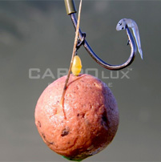

20 ноября 2014
Прикормка «на все случаи жизни». Прекрасно подходит для любого способа ловли на любую белую рыбу. Фракция средняя, выпускается в пяти цветах и имеет девять различных ароматов, что дает прекрасную возможность для самостоятельных экспериментов с цветами и запахами. Максимально повышает эффективность прикормки добавление рубленного мотыля и опарыша. Рекомендуем доувлажнить смесь сиропами если собираетесь ловить на поплавочную снасть или при ловле на метод.

27 сентября 2014

20 ноября 2014